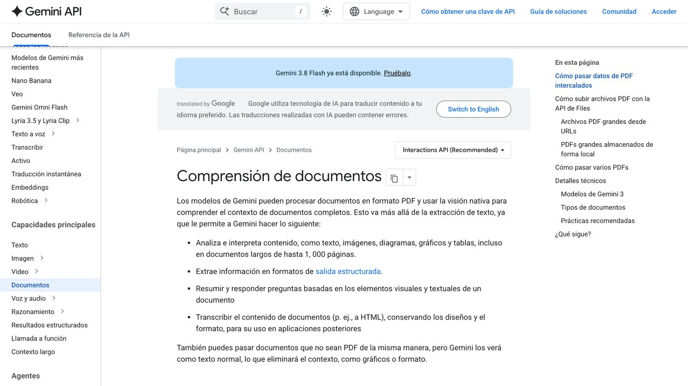

D urante años, usar un modelo de lenguaje significaba escribir. Ahora puedes soltarle la foto de una factura arrugada, la captura de un panel que no entiendes o un informe en PDF, y pedirle que razone sobre ello. Funciona, y a menudo mejor de lo que esperabas. El problema es que también falla, y falla de formas que no se parecen a los errores que ya conoces del texto: no te dice "no puedo leer esto", te da una cifra equivocada con la misma seguridad con la que te habría dado la correcta.
Esta guía no va de qué herramienta es "la mejor" para ver imágenes. Va de entender qué pasa entre que sueltas el archivo y recibes la respuesta, porque casi todos los fallos y casi toda la factura se explican ahí. Los límites concretos que aparecen abajo salen de la documentación oficial de Anthropic y de Google para sus respectivas APIs; son los que estaban publicados al escribir esto, y conviene que los compruebes el día que montes algo encima de ellos.
Tu PDF no se lee: se fotografía
La intuición natural es que el modelo "abre" el PDF y lee el texto, como harías tú. No es lo que ocurre. Anthropic lo documenta paso a paso para su API: el sistema convierte cada página del documento en una imagen, extrae además el texto de esa página, y le entrega al modelo las dos cosas a la vez. El modelo mira la foto de la página y lee la transcripción en paralelo.
Esa doble entrega no es un capricho: es lo que permite preguntar por un gráfico de barras, por la casilla marcada de un formulario o por la estructura de una tabla a dos columnas. Un extractor de texto clásico te habría devuelto las cifras del gráfico solo si estaban escritas como texto; la vía de la imagen le deja además ver la barra.
De aquí salen dos consecuencias prácticas que conviene tener claras antes de seguir. La primera: un PDF escaneado —una fotocopia, un fax antiguo, un contrato firmado y pasado por el escáner— no tiene capa de texto, así que solo recorre la vía de la imagen. Todo lo que el modelo sepa de ese documento sale de mirarlo, con los errores de lectura que eso implica. Si lo que vas a pasar por ahí es justamente un contrato, conviene saber antes qué parte de esa revisión puedes delegar y cuál no. La segunda es de dinero, y va en la sección siguiente.
La prueba de los treinta segundos: abre el PDF e intenta seleccionar un párrafo con el ratón. Si puedes seleccionarlo, tiene capa de texto. Si el cursor resbala por encima como si fuera una foto, es un escaneo — y ahí es donde se concentran casi todos los errores de lectura.
Los límites que sí están publicados
Estos son los techos documentados por cada fabricante. Importan porque son la diferencia entre que tu proceso funcione y que devuelva un error a mitad de un lote de mil documentos.
32 MB por petición, contando todo lo que mandes junto. Hasta 600 páginas por petición, que bajan a 100 si el modelo tiene una ventana de contexto menor de un millón de tokens. Cada imagen, hasta 10 MB y 8000×8000 px. En claude.ai, 20 imágenes por mensaje y hasta 10 MB cada una. En la API, hasta 600 imágenes por petición (100 si el modelo tiene una ventana de contexto de 200.000 tokens), pero si mandas más de 20 en una misma petición se aplica un límite de tamaño por imagen más estricto: lo seguro es reducirlas a 2.000 px de lado. Formatos: JPEG, PNG, GIF y WebP — las animaciones no se admiten, solo se usa el primer fotograma.
Hasta 50 MB o 1.000 páginas por documento. Google publica además una cifra útil para calcular: cada página de documento equivale a 258 tokens. Las páginas grandes se reescalan a un máximo de 3072×3072 px y las pequeñas se amplían hasta 768×768, conservando la proporción. En los modelos Gemini 3, el texto nativo de un PDF no se factura y las imágenes de las páginas cuentan como imagen; los archivos subidos con la Files API se guardan 48 horas.
Con ChatGPT los números son otros y están en su centro de ayuda: según la FAQ de subida de archivos de OpenAI, cada archivo puede pesar hasta 512 MB, los documentos de texto se limitan a 2 millones de tokens, las imágenes a 20 MB, y los usuarios gratuitos pueden subir 3 archivos al día (OpenAI avisa de que los límites pueden bajar en horas punta). No hemos encontrado un tope de páginas por PDF, así que el techo real vuelve a ser el presupuesto de tokens del archivo y de la conversación. La página de OpenAI nos bloquea la lectura automática, por lo que estas cifras las hemos tomado del resultado del buscador; compruébalas en la propia página.
Y una advertencia que vale para las tres: estos números se mueven. La tabla de arriba es la foto del momento en que se escribió esta guía. Si vas a construir algo encima, ábrete la documentación del fabricante el mismo día y compruébalo — es literalmente un minuto, y te ahorra descubrirlo en producción.
Por qué una captura de pantalla sale más cara de lo que crees
Aquí está la parte que sorprende a casi todo el mundo la primera vez que mira la factura. Anthropic documenta que su modelo no ve píxeles sueltos, sino parches de 28×28 px, y que cada parche es un token visual. La cuenta es directa: una imagen cuesta ⌈ancho / 28⌉ × ⌈alto / 28⌉ tokens visuales.
Una imagen de 1000×1000 px son 36×36 parches: 1.296 tokens visuales, según la propia tabla de la documentación. Es decir, una captura cuadrada modesta te cuesta aproximadamente lo mismo que unas mil palabras de texto. Y un PDF, recuerda, es una imagen por página más el texto extraído: Anthropic calcula entre 1.500 y 3.000 tokens por página según la densidad del contenido.
| Tamaño de la imagen | Modelos anteriores (máx. 1.568 px) | Modelos 4.7 y posteriores (máx. 2.576 px) |
|---|---|---|
| 200×200 px | 64 tokens | 64 tokens |
| 1000×1000 px | 1.296 tokens | 1.296 tokens |
| 1920×1080 px | 1.560 tokens (se reduce a 1456×819) | 2.691 tokens (no se reduce) |
| 3840×2160 px (4K) | 1.560 tokens (se reduce) | 4.784 tokens (se reduce a 2576×1449) |
Valores de la documentación de visión de Anthropic, consultada el 17 de octubre de 2026. Con la tarifa de entrada de un modelo concreto puedes calcular el coste por imagen; nuestra calculadora de coste de API te ayuda a hacerlo.
Hay un segundo factor. Los modelos recientes de Anthropic trabajan en una resolución mayor —hasta 2576 px de lado largo y 4.784 tokens visuales, frente a 1568 px y 1.568 tokens en los anteriores— y la documentación avisa de que eso puede multiplicar por tres el coste en tokens de la misma imagen. Más fidelidad para documentos densos, sí, pero se paga.
Lo que esto significa en la práctica: si mandas una captura en 4K, el sistema la va a reescalar de todas formas antes de procesarla. Redimensionarla tú antes de subirla no te quita calidad que fueras a aprovechar — te quita factura. Y si lo único que necesitas es el texto de un PDF que ya tiene capa de texto, extraerlo y pegarlo como texto plano es varias veces más barato que subir el PDF entero. Si quieres poner números a tu caso, tenemos una calculadora de coste de API.

Dónde falla, según quien lo fabrica
Lo más útil de la documentación de Anthropic sobre visión no son las capacidades: es la lista de limitaciones, que es inusualmente franca para un material de producto. Merece la pena repasarla entera porque cada punto corresponde a un error real que te vas a encontrar.
Imágenes pequeñas, giradas o de mala calidad
La documentación admite que el modelo puede alucinar o equivocarse interpretando imágenes de baja calidad, rotadas o muy pequeñas —menciona explícitamente por debajo de 200 píxeles—. Es exactamente el perfil de una foto de un recibo hecha con el móvil de lado y con poca luz.
Contar cosas
Da conteos aproximados, y el error crece cuando hay muchos objetos pequeños. Si tu tarea es "cuántas unidades hay en esta estantería" o "cuántas filas tiene esta tabla", no delegues la cifra sin comprobarla.
Posiciones y coordenadas
Las salidas de localización son aproximadas, y la propia documentación pide verificarlas antes de depender de ellas. Relevante si pretendes recortar automáticamente una región concreta de un documento.
Detectar si una imagen es generada por IA
No puede, y la documentación lo dice sin rodeos: pide que no se use para eso. Si alguien te vende un detector de imágenes falsas que por dentro es un modelo generalista al que se le pregunta "¿esto es real?", te está vendiendo humo.
No lee los metadatos
El modelo no recibe ni analiza los metadatos de la imagen. La fecha, el modelo de cámara o las coordenadas GPS del EXIF no le llegan: si necesitas ese dato, extráelo tú con otra herramienta y pásaselo como texto.
Imágenes médicas y personas
Anthropic señala que el modelo no está diseñado para interpretar pruebas diagnósticas complejas como un TAC o una resonancia, y que sus salidas no sustituyen a un profesional. Tampoco identifica a personas en imágenes: se niega por política de uso.
A esa lista conviene añadir un hallazgo que se repite en las evaluaciones de documentos publicadas este año, y que es quizá la frase más útil de toda esta guía si piensas automatizar algo: el acierto medio sobre PDFs limpios no predice el rendimiento sobre documentos escaneados, manuscritos o de maquetación variable. Traducido: la demo con el informe corporativo bien maquetado no te dice nada sobre cómo se va a comportar con las facturas reales de tus proveedores. La única prueba que vale es con tus documentos peores, no con los mejores.
La letra manuscrita sigue siendo el caso más duro de todos. Ha mejorado mucho, pero es donde más separación hay entre modelos y donde más caro sale confiarse. Si tu flujo depende de leer anotaciones a mano, mide el acierto sobre una muestra tuya antes de montar nada encima.
Cómo pedirlo para que salga bien
Buena parte de los errores evitables se corrigen con cambios que no cuestan nada. Estos salen de las buenas prácticas que publica Anthropic y de lo que se nota al usarlo a diario.
1. El archivo primero, la pregunta después
Igual que con los documentos largos de texto, el modelo rinde mejor cuando la imagen o el PDF van antes de tu pregunta. Funciona al revés, pero peor. Es el cambio más barato de la lista.
2. Endereza las páginas
Orientación vertical correcta, siempre. Una página girada 90 grados es una de las causas documentadas de error, y rotarla antes de enviarla es cuestión de un clic.
3. Redimensiona tú, no dejes que lo haga el sistema
Si la imagen supera el máximo del modelo, se reescala sola — y al reescalarse, el texto pequeño puede volverse ilegible. Mejor que decidas tú el recorte y el tamaño, sabiendo qué parte importa.
4. Cuidado con comprimir de más
Un JPEG muy comprimido pesa menos y viaja más rápido, pero los artefactos de compresión afectan al rendimiento, y con texto pequeño lo destrozan. La documentación recomienda mirar de verdad la imagen que estás enviando, no la original.
5. No recortes el contexto por agrandar el texto
Es un error frecuente: ampliar tanto una cifra que se pierde la cabecera de la columna a la que pertenece. El número se lee mejor y significa menos.
6. Pide la cita antes que la conclusión
"Transcribe literalmente la línea donde aparece el total, y solo después dime cuál es" da mejores resultados que preguntar directamente por el total. Obligarle a copiar antes de interpretar deja el error a la vista, que es justo la lógica del grounding aplicada a documentos.
7. Numera las páginas como las ve el visor
Al referirte a una página concreta, usa el número que muestra el visor de PDF. Y si envías varias imágenes sueltas, etiquétalas ("Imagen 1:", "Imagen 2:") para poder referirte a ellas después sin ambigüedad.
Una nota aparte sobre los documentos que subes. Un PDF de trabajo suele llevar nombres, cuentas, direcciones o datos de clientes, y al subirlo sales de tu ordenador. Según la documentación de la API de Anthropic, las imágenes que envías no se almacenan más allá de la petición y no se usan para entrenar modelos; en las apps de consumo de cualquier empresa eso depende de tus ajustes. Antes de convertirlo en rutina, revisa qué política de retención tiene la herramienta concreta que usas y si el plan que tienes contratado entrena con lo que envías; lo desarrollamos en la guía sobre cómo proteger tus datos al usar IA.
Cuándo no deberías usar un modelo generalista
Hay una idea instalada de que los modelos grandes han dejado obsoleto al OCR de toda la vida. Los resultados publicados este año en las comparativas de documentos dicen algo más matizado: modelos de OCR especializados y comparativamente diminutos —del orden de mil millones de parámetros— rinden mejor que modelos multimodales generalistas cientos de veces más grandes en las pruebas centradas en documentos.
No es una contradicción, son dos trabajos distintos. Un modelo generalista es para entender y razonar sobre un documento: qué dice este contrato, qué implica este gráfico, en qué se diferencian estas dos versiones. Un OCR especializado es para transcribir a escala: convertir diez mil facturas escaneadas en datos estructurados, con un coste por documento y una tasa de error que puedes medir y presupuestar.
La regla práctica: si el volumen es alto y la pregunta siempre es la misma, monta una tubería especializada y usa el modelo grande solo para los casos que esa tubería marque como dudosos. Si el volumen es bajo y la pregunta cambia cada vez, el modelo generalista es justo lo que quieres. Pagar tokens visuales por transcribir en masa algo que un OCR hace mejor y más barato es el error caro de este año.
Cómo decidirlo en una tarde: coge veinte documentos reales tuyos, y que sean los peores que tengas — escaneos torcidos, fotocopias, anotaciones a mano. Pásalos por las dos vías. Cuenta los errores a mano, uno a uno. Veinte documentos bien contados te dan una respuesta más fiable que cualquier comparativa publicada, porque están medidos sobre tus documentos y no sobre los de otro.
Stirling PDF: más de 50 herramientas para PDF, gratis
Antes de pasarle un PDF a una IA, a menudo hay que prepararlo: unir archivos, quitar páginas o convertir un escaneado en texto. Stirling PDF es una plataforma de código abierto con más de 50 herramientas para eso: editar, unir, dividir, firmar, tachar datos, convertir, comprimir y aplicar OCR.
Cómo usarlo
- Elige la forma que prefieras: app de escritorio, interfaz en el navegador o tu propio servidor. Las instrucciones están en docs.stirlingpdf.com.
- Si sabes usar Docker, basta con
docker run -p 8080:8080 docker.stirlingpdf.com/stirlingtools/stirling-pdfy abrirhttp://localhost:8080. - Elige la herramienta (por ejemplo, OCR o comprimir), sube el archivo y descarga el resultado.
La interfaz está disponible en más de 40 idiomas y permite encadenar pasos sin programar.
Lo honesto: el proyecto es open-core: la mayor parte es libre, pero hay funciones de empresa de pago (inicio de sesión único, auditoría). Si lo instalas en tu ordenador, tus documentos no salen de él, algo importante con contratos o nóminas.
Flameshot: capturas claras para pasárselas a la IA
Cuando le enseñas una captura a una IA (un error, una tabla, una pantalla que no entiendes), cuanto más clara sea, mejor responde. Flameshot es una herramienta de capturas de pantalla gratuita y de código abierto (GPL-3.0) con edición integrada.
Cómo usarla
- Descárgala desde flameshot.org. Funciona en Windows, macOS y Linux.
- Asígnale un atajo de teclado (por ejemplo, la tecla Imprimir pantalla).
- Pulsa el atajo y selecciona la zona.
- Antes de guardar, añade flechas, recuadros, texto o números para señalar lo importante.
- Pixela cualquier dato privado: correos, nombres, cuentas o documentos.
- Copia al portapapeles y pégalo en el chat de tu IA, o guárdalo como archivo.
También permite subir la imagen a Imgur, algo que conviene evitar con información sensible.
Lo honesto: no tiene app para móvil. El pixelado debe cubrir el dato completo; y recuerda que todo lo que pegas en un chat de IA sale de tu ordenador, así que tapa lo privado antes, no después.
MarkItDown: prepara cualquier archivo para la IA
Los modelos de lenguaje entienden mejor el texto estructurado que un PDF o un Excel en bruto. MarkItDown es una utilidad gratuita de Microsoft (MIT) que convierte archivos a Markdown, un formato de texto sencillo que conserva títulos, listas y tablas, y que además ocupa pocos tokens.
Qué convierte
PDF, PowerPoint, Word, Excel, imágenes (metadatos y OCR), audio (metadatos y transcripción), HTML, formatos de texto como CSV, JSON y XML, archivos ZIP, enlaces de YouTube y EPUB.
Cómo usarlo
- Instala Python (de la 3.10 a la 3.14) y, mejor, crea un entorno virtual.
- Instala la herramienta:
pip install 'markitdown[all]'. - Convierte un archivo:
markitdown informe.pdf -o informe.md. - Pega o sube el resultado a tu asistente de IA.
Lo honesto: se usa desde la terminal, así que no es para todo el mundo. En documentos escaneados o con maquetación compleja, el resultado puede necesitar retoques. El propio proyecto avisa de que accede a los archivos con los permisos de tu usuario: no lo uses sobre archivos que no sean de confianza en entornos sensibles.
Enlace oficial: github.com/microsoft/markitdown
Ejemplo práctico: sacar los datos de una factura sin fiarte a ciegas
Es el caso de uso más común y donde más duele equivocarse. Esta plantilla aplica lo anterior: archivo primero, cita literal antes de la cifra y una comprobación que puedas verificar tú.
[sube aquí la factura] De esta factura, extrae en una tabla: proveedor, NIF, fecha, número de factura, base imponible, IVA (tipo e importe) y total. Reglas: 1. Para cada dato, copia entre comillas la línea literal de la factura de la que lo sacas. 2. Si un dato no se lee con claridad, escribe "ILEGIBLE"; no lo adivines. 3. Comprueba que base + IVA = total y dime si no cuadra. 4. No inventes ningún campo que no aparezca.
Después, mira dos cosas: que las citas literales coinciden con lo que ves en la factura, y que la suma cuadra. Si procesas cientos, automatiza la suma y revisa a mano solo las que fallen. Si el documento es un contrato, lee antes revisar contratos con IA; para entender por qué inventa datos, alucinaciones de la IA y grounding.
Y si ya sabes cuánto te va a costar el lote, repasa cuánto cuesta usar IA por API.
Preguntas frecuentes
En resumen
La entrada multimodal ha dejado de ser una demo y ya resuelve trabajo real, pero se comporta como una herramienta con mecánica propia, no como magia. Merece la pena quedarse con tres cosas: tu PDF llega al modelo como imágenes más texto, y eso explica a la vez lo que puede ver y lo que te cobra; las limitaciones que importan están publicadas por los propios fabricantes, así que leerlas sale más barato que descubrirlas; y la única evaluación que sirve es la que haces con tus peores documentos, no con los que enseñaría un comercial.
Si vas a automatizar algo con esto, el orden sensato es: mide primero sobre una muestra real tuya, pon una comprobación que detecte el error antes de que llegue a producción, y sube la autonomía solo cuando los números aguanten. Es la misma cautela que aplicamos a cualquier agente — y aquí, donde el error viene disfrazado de cifra concreta y bien formateada, con más razón.
Queda una entrada que esta guía no cubre y que funciona con una lógica distinta: el sonido. Transcribir, sintetizar voz o clonar la de alguien tiene sus propios fallos —una transcripción puede inventarse una frase entera sin que se note— y, a diferencia de leer un PDF, arrastra obligaciones legales propias. Está en la guía de clonar voz, transcribir y generar audio con IA.